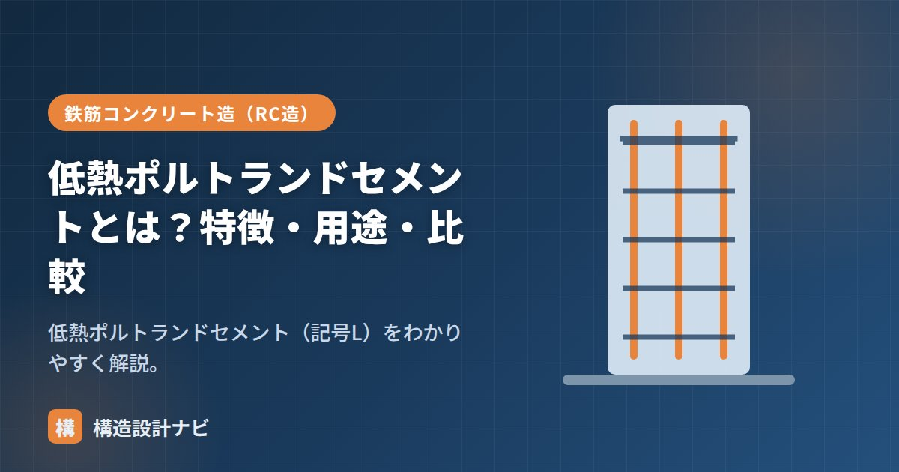

低熱ポルトランドセメントとは？特徴・用途・比較

低熱ポルトランドセメント（記号L）とは、ポルトランドセメント6種類の中で水和熱が最も小さいセメントのことです。読み方は「ていねつポルトランドセメント」で、英語ではLow Heat Portland Cementと呼ばれます。硬化の初速はゆっくりですが、時間をかけて緻密な組織を形成するため長期的な強度・耐久性に優れ、大断面のコンクリート構造物や高強度コンクリートで活躍します。
- 低熱ポルトランドセメント（L）は水和熱が最も小さく、初期強度は遅いが長期強度は高い。
- ビーライト（C₂S）を多く含むことで発熱を抑えている。
- マスコンクリート・高強度・高流動コンクリートで使われる。
水和熱・初期強度の特徴
記号はL（Low heat）。長期強度に寄与するビーライト（C₂S）を多く含み、発熱を抑えています。
- 水和熱が最小：温度上昇・温度ひび割れを最も抑えられる。
- 初期強度は遅い：立ち上がりがゆっくり。
- 長期強度は高い：時間をかけて高い強度に達する。
なぜ発熱が小さいのか
セメントが水と反応（水和反応）すると、発熱を伴いながら硬化が進みます。この発熱の大きさは、クリンカに含まれる鉱物の種類・割合によって変わります。低熱ポルトランドセメントは、初期に急激に発熱するエーライト（C₃S）やアルミネート（C₃A）の量を抑え、反応がゆるやかなビーライト（C₂S）の割合を多くすることで、全体としての発熱量と発熱速度を小さく抑えています。断面が大きいコンクリートでは、内部と表面の温度差が大きくなるほど温度ひび割れのリスクが高まるため、この発熱コントロールが重要な意味を持ちます。
用途
- マスコンクリート：大断面の温度ひび割れ対策。ダム・大型基礎など。
- 高強度コンクリート：発熱を抑えつつ高強度を得たい高層建物の柱・梁など。
- 高流動コンクリート：単位セメント量が多くなりやすく、発熱抑制が有効。
他のセメントとの比較
| 種類 | 水和熱 | 初期強度 |
|---|---|---|
| 早強（H） | 大きい | 速い |
| 普通（N） | 標準 | 標準 |
| 中庸熱（M） | 小さめ | やや遅い |
| 低熱（L） | 最小 | 遅い |
初期強度が遅いため、養生期間を長めにとり乾燥を防ぐこと、寒冷期の使用には特に注意が必要です。型枠の存置期間も、強度発現の遅さを踏まえて余裕を持って計画します。
Q1. 中庸熱と低熱はどう使い分けますか？
どちらも発熱を抑えたセメントですが、低熱のほうがさらに水和熱が小さく、長期強度もより高くなる傾向があります。断面が特に大きい・高強度が求められるなど、より厳しい条件では低熱を選ぶのが一般的です。
Q2. 低熱セメントを使うと工期は延びますか？
初期強度の立ち上がりが遅いため、型枠の存置期間や次工程への移行に余裕を見る必要があり、結果として工程に影響することがあります。計画段階で強度発現の見込みを織り込んでおくことが大切です。
低熱セメントを指定する図面を出すときは、型枠存置期間を通常より長めに設定した上で、施工者と事前に工程共有しておくことを欠かしません。強度発現の遅さを知らずに早期の型枠脱型を計画されると、後で工程がしわ寄せになるためです。
まとめ
- 低熱ポルトランドセメント（記号L）は水和熱が最小のセメント。
- ビーライト（C₂S）を多く含み発熱を抑える。初期強度は遅いが長期強度は高い。
- マスコン・高強度・高流動に使う。中庸熱よりさらに低発熱。
- 養生期間や型枠存置期間は、強度発現の遅さを見込んで余裕を持たせる。